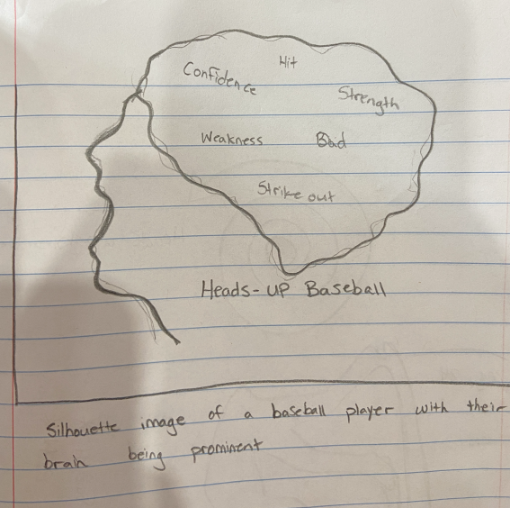
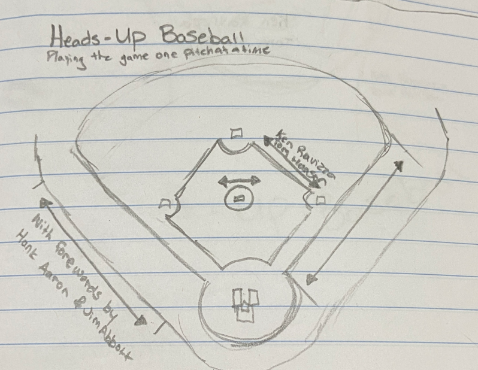
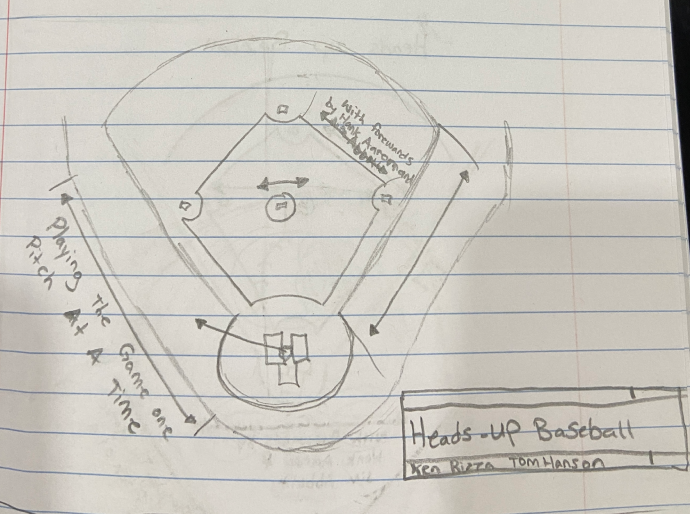
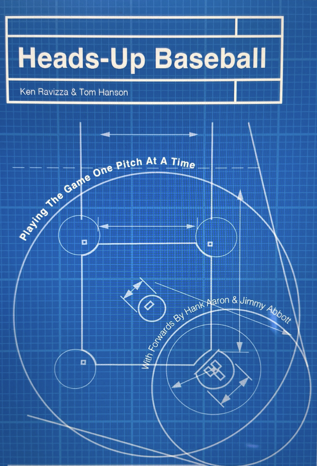
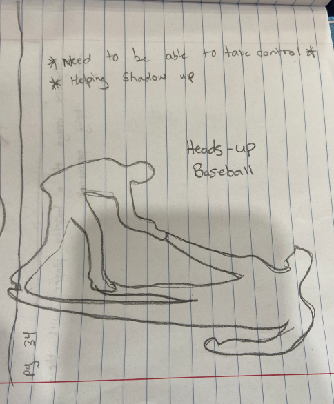
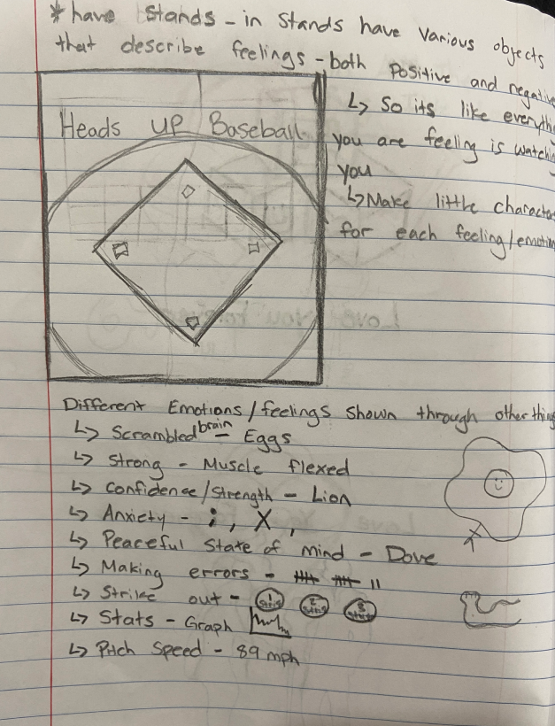
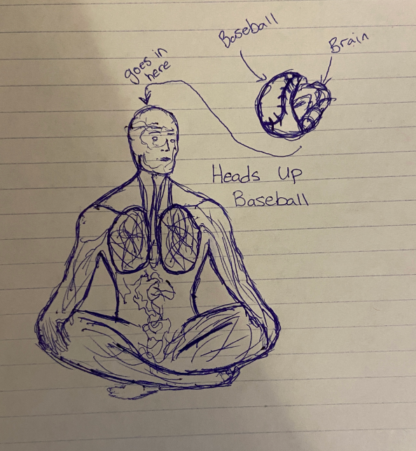
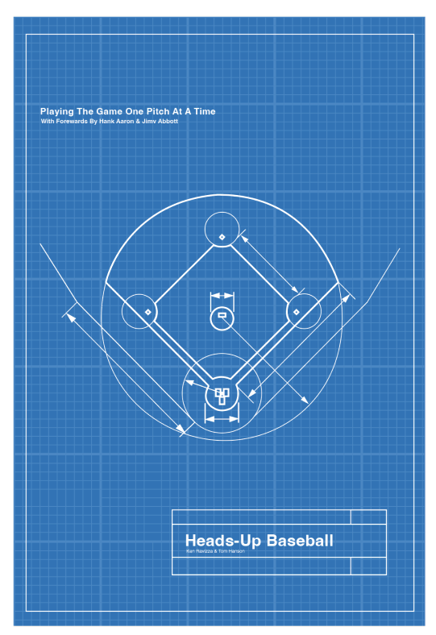

Book Cover Design
Visual Metaphor + Typography
Using a baseball diamond blueprint as a visual metaphor for mental strategy, discipline, and preparation in sport.

What
A book cover featuring a blueprint of a baseball diamond, using technical drawing aesthetics to symbolize the strategic and mental preparation required for success in baseball. The design employs metaphor, analogy, and allusion to connect physical and mental aspects of the game.

Why
To visually communicate that mental preparation is as crucial as physical skill, using the blueprint metaphor to suggest that success requires a well-thought-out plan. The design makes the abstract concept of mental strategy tangible and immediately recognizable.
Problem / Opportunity
This project explores how visual metaphor can make abstract concepts like mental toughness and strategic thinking feel concrete and actionable. By using a baseball diamond blueprint, the design creates an immediate association: just as buildings require careful planning, athletic success requires mental preparation and strategic thinking.
Key Features

✏️ Blueprint Aesthetic
Technical drawing style with grids, measurements, and linework reinforces themes of structure, planning, and the intentional building of skills over time.

📐 Metaphorical Visualization
The blueprint of a baseball diamond serves as a metaphor for mental preparation, discipline, and strategic thinking, representing the "mental blueprint" for success.
Process and Exploration





Outcome
The book cover successfully uses visual metaphor to transform the abstract concept of mental preparation into a concrete, recognizable form. The blueprint aesthetic creates immediate associations with planning, structure, and intentional development.
This project demonstrates how thoughtful design choices can create layers of meaning that resonate with the intended audience, making the connection between planning and mental preparation clear without over-explaining.